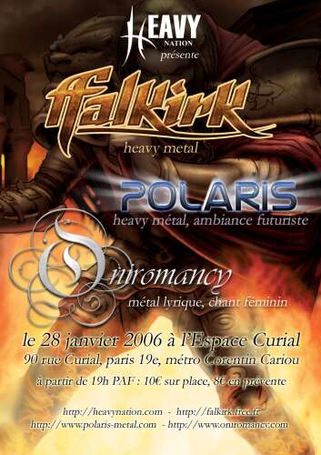

 |
Ce sera le 1er concert organisé par l'asso HeavyNation alors venez nombreux ! Les préventes sont à 8 euros, alors n'hésitez pas à contacter l'association ou le groupe pour vous en procurer. http://heavynation.com
|
_________________________________________________________________
- Enfin des news du nouvel album -
Désolé d'avoir été si avare en news, mais il reste encore beaucoup de travail avant la sortie de l'album. Les premiers mix sonnent énormes, et ce troisième disque s'appellera "Gates of Dawn"
_________________________________________________________________
Le concert s'est bien passé en dépit du peu de monde ayant fait le déplacement :-(
En tout cas, le groupe remercie chaleureusement Sylvie et Holger de Gom Records ainsi que Phenix (et les trois excités devant ;-)


_________________________________________________________________
Un site de plus qui aide à la promotion du metal : rendez vous vite sur :

_________________________________________________________________

Un petit concours amical organisé par le groupe Towersound.
Votez pour nous en cliquant sur le logo ;-)

_________________________________________________________________
- Concert à but caritatif "coeur de métal"
le 15 JUIN 2005 A 20h00 a l'artscene de Saint Martin d'Heres(Isere)
-
A l'affiche FEVERISH, MALMONDE, ELIPSIS, BLACK SEED entree 10 euros reversé
intégralement a l'association kabuki.
Le syndrome de kabuki est une maladie orpheline dont est atteint le fils d'un
des organisateurs.
Si vous êtes dans la région, pensez à soutenir cette initiative,
merci :-)
_________________________________________________________________
Pétition à signer pour faire avancer la diffusion des musiques de la scène alternative, y compris le metal :-) objectif 100.000 signatures alors signez !

_________________________________________________________________
Ca y est ! FalkirK
donne enfin un successeur à Magnus Imperium. Bien sur, il faudra encore
beaucoup de patience pour que l'album sorte, car le travail est énorme,
et le temps à consacrer à la musique malheureusement très
court. Pas de temps non plus pour vous faire un "studio report",
alors voilà 2 petites vidéos pour faire patienter, et pour bien
prouver qu'on ne se tourne pas les pouces ! Les vidéos font environ
6Mo chacune. Enjoy :-)
InStudio1 - InStudio2
_________________________________________________________________
FalkirK est référencé sur le site INFO-GROUPE ainsi que près de 600 groupes (au 15 mars).
Au programme, infos, bios, actualité et extraits mmusicaux des groupes.
N'hésitez pas à aller y faire un tour pour faire de bonnes découvertes
musicales:-)

_________________________________________________________________

_________________________________________________________________
Le concert du Raismesfest
s'est très bien déroulé. Merci à tous ceux qui
étaient présents.
DES PHOTOS, et peut-être
plus si la qualité est au rendez-vous...
__________
Des comptes rendus et
des photos ici
NOISEWEB
LES
FILS DU METAL
__________
http://raismesfest.free.fr/

_________________________________________________________________
Deux autres VIDEOS de FalkirK sont dispos ! Par manque de place, il n'y aura que ces trois là
pour le moment. Mais le groupe compte bien en mettre d'autres à moyen
terme ;-)
_________________________________________________________________
Enfin uneVIDEO de FalkirK. un morceaux filmé au SolidHardLive en novembre 2003.
Bientôt d'autres en ligne... Enjoy !

_________________________________________________________________
La 1e édition du Solidhardlive a été un franc succès
! Merci a tous pour l'accueil réservé aux groupes, et notamment
à FalkirK.
Des photos ICI, et
toujours des infos sur l'association qui a organisé l'évènement
:
http://solidhardlive.free.fr/fest.htm
__________
Des
comptes rendus et
des photos ici
INTERFERENCES
LES FILS DU METAL
HEAVEN CAN WAIT
EXIT
NEDRA
__________

__________________________________________________________________
Le concert de FalkirK du 25 octobre s'est très bien
déroulé. Merci à ceux qui étaient là. Pour
infos : http://perso.wanadoo.fr/festivaldevouziers.
De nombreuses photos de l'évènement figurent sur le site.

__________________________________________________________________
FalkirK figure sur la compile "Metal Action 3".
Pour infos : metalaction@hotmail.com